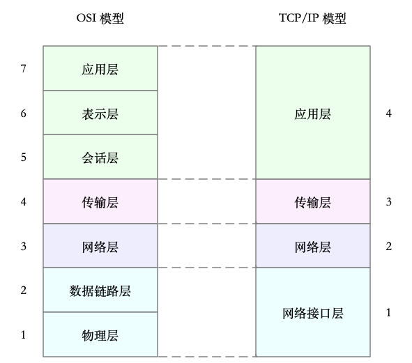
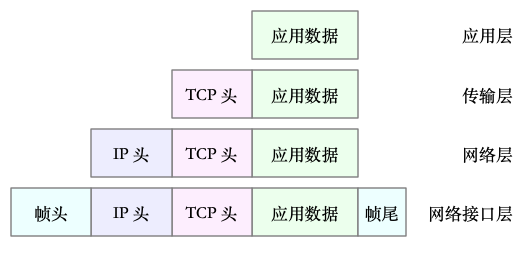
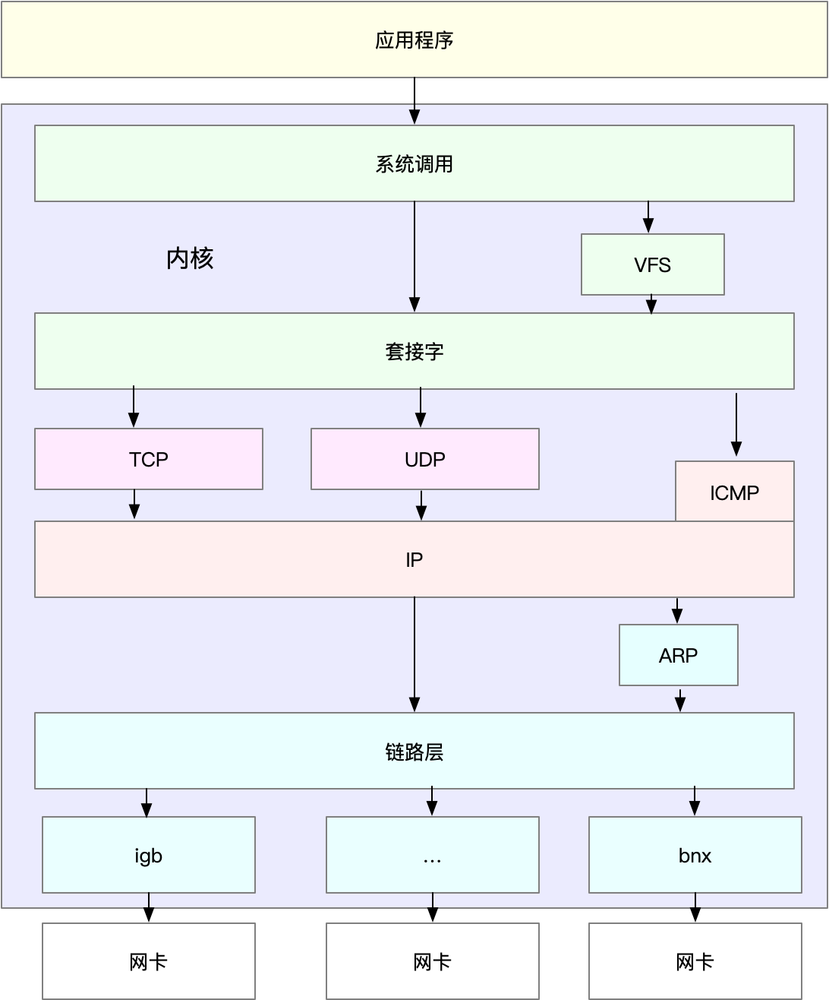
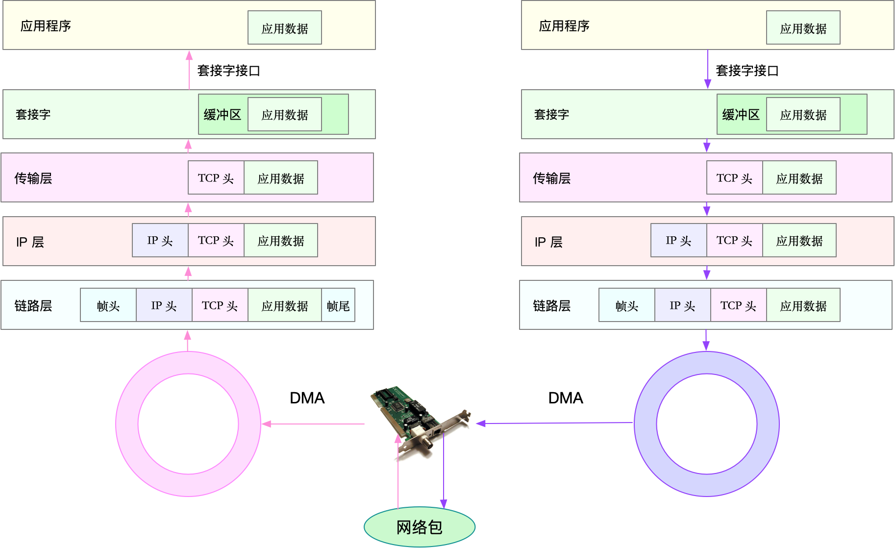

- 00 开篇词 别再让Linux性能问题成为你的绊脚石.md.html
- 01 如何学习Linux性能优化？.md.html
- 02 基础篇：到底应该怎么理解“平均负载”？.md.html
- 03 基础篇：经常说的 CPU 上下文切换是什么意思？（上）.md.html
- 04 基础篇：经常说的 CPU 上下文切换是什么意思？（下）.md.html
- 05 基础篇：某个应用的CPU使用率居然达到100%，我该怎么办？.md.html
- 06 案例篇：系统的 CPU 使用率很高，但为啥却找不到高 CPU 的应用？.md.html
- 07 案例篇：系统中出现大量不可中断进程和僵尸进程怎么办？（上）.md.html
- 08 案例篇：系统中出现大量不可中断进程和僵尸进程怎么办？（下）.md.html
- 09 基础篇：怎么理解Linux软中断？.md.html
- 10 案例篇：系统的软中断CPU使用率升高，我该怎么办？.md.html
- 11 套路篇：如何迅速分析出系统CPU的瓶颈在哪里？.md.html
- 12 套路篇：CPU 性能优化的几个思路.md.html
- 13 答疑（一）：无法模拟出 RES 中断的问题，怎么办？.md.html
- 14 答疑（二）：如何用perf工具分析Java程序？.md.html
- 15 基础篇：Linux内存是怎么工作的？.md.html
- 16 基础篇：怎么理解内存中的Buffer和Cache？.md.html
- 17 案例篇：如何利用系统缓存优化程序的运行效率？.md.html
- 18 案例篇：内存泄漏了，我该如何定位和处理？.md.html
- 19 案例篇：为什么系统的Swap变高了（上）.md.html
- 20 案例篇：为什么系统的Swap变高了？（下）.md.html
- 21 套路篇：如何“快准狠”找到系统内存的问题？.md.html
- 22 答疑（三）：文件系统与磁盘的区别是什么？.md.html
- 23 基础篇：Linux 文件系统是怎么工作的？.md.html
- 24 基础篇：Linux 磁盘I_O是怎么工作的（上）.md.html
- 25 基础篇：Linux 磁盘I_O是怎么工作的（下）.md.html
- 26 案例篇：如何找出狂打日志的“内鬼”？.md.html
- 27 案例篇：为什么我的磁盘I_O延迟很高？.md.html
- 28 案例篇：一个SQL查询要15秒，这是怎么回事？.md.html
- 29 案例篇：Redis响应严重延迟，如何解决？.md.html
- 30 套路篇：如何迅速分析出系统I_O的瓶颈在哪里？.md.html
- 31 套路篇：磁盘 I_O 性能优化的几个思路.md.html
- 32 答疑（四）：阻塞、非阻塞 I_O 与同步、异步 I_O 的区别和联系.md.html
- 33 关于 Linux 网络，你必须知道这些（上）.md.html
- 34 关于 Linux 网络，你必须知道这些（下）.md.html
- 35 基础篇：C10K 和 C1000K 回顾.md.html
- 36 套路篇：怎么评估系统的网络性能？.md.html
- 37 案例篇：DNS 解析时快时慢，我该怎么办？.md.html
- 38 案例篇：怎么使用 tcpdump 和 Wireshark 分析网络流量？.md.html
- 39 案例篇：怎么缓解 DDoS 攻击带来的性能下降问题？.md.html
- 40 案例篇：网络请求延迟变大了，我该怎么办？.md.html
- 41 案例篇：如何优化 NAT 性能？（上）.md.html
- 42 案例篇：如何优化 NAT 性能？（下）.md.html
- 43 套路篇：网络性能优化的几个思路（上）.md.html
- 44 套路篇：网络性能优化的几个思路（下）.md.html
- 45 答疑（五）：网络收发过程中，缓冲区位置在哪里？.md.html
- 46 案例篇：为什么应用容器化后，启动慢了很多？.md.html
- 47 案例篇：服务器总是时不时丢包，我该怎么办？（上）.md.html
- 48 案例篇：服务器总是时不时丢包，我该怎么办？（下）.md.html
- 49 案例篇：内核线程 CPU 利用率太高，我该怎么办？.md.html
- 50 案例篇：动态追踪怎么用？（上）.md.html
- 51 案例篇：动态追踪怎么用？（下）.md.html
- 52 案例篇：服务吞吐量下降很厉害，怎么分析？.md.html
- 53 套路篇：系统监控的综合思路.md.html
- 54 套路篇：应用监控的一般思路.md.html
- 55 套路篇：分析性能问题的一般步骤.md.html
- 56 套路篇：优化性能问题的一般方法.md.html
- 57 套路篇：Linux 性能工具速查.md.html
- 58 答疑（六）：容器冷启动如何性能分析？.md.html
- 加餐（一） 书单推荐：性能优化和Linux 系统原理.md.html
- 加餐（二） 书单推荐：网络原理和 Linux 内核实现.md.html
- 用户故事 “半路出家 ”，也要顺利拿下性能优化！.md.html
- 用户故事 运维和开发工程师们怎么说？.md.html
- 结束语 愿你攻克性能难关.md.html
- 捐赠
33 关于 Linux 网络，你必须知道这些（上）
你好，我是倪朋飞。
前几节，我们一起学习了文件系统和磁盘 I/O 的工作原理，以及相应的性能分析和优化方法。接下来，我们将进入下一个重要模块—— Linux 的网络子系统。
由于网络处理的流程最复杂，跟我们前面讲到的进程调度、中断处理、内存管理以及 I/O 等都密不可分，所以，我把网络模块作为最后一个资源模块来讲解。
同 CPU、内存以及 I/O 一样，网络也是 Linux 系统最核心的功能。网络是一种把不同计算机或网络设备连接到一起的技术，它本质上是一种进程间通信方式，特别是跨系统的进程间通信，必须要通过网络才能进行。随着高并发、分布式、云计算、微服务等技术的普及，网络的性能也变得越来越重要。
那么，Linux 网络又是怎么工作的呢？又有哪些指标衡量网络的性能呢？接下来的两篇文章，我将带你一起学习 Linux 网络的工作原理和性能指标。
网络模型
说到网络，我想你肯定经常提起七层负载均衡、四层负载均衡，或者三层设备、二层设备等等。那么，这里说的二层、三层、四层、七层又都是什么意思呢？
实际上，这些层都来自国际标准化组织制定的开放式系统互联通信参考模型（Open System Interconnection Reference Model），简称为 OSI 网络模型。
为了解决网络互联中异构设备的兼容性问题，并解耦复杂的网络包处理流程，OSI 模型把网络互联的框架分为应用层、表示层、会话层、传输层、网络层、数据链路层以及物理层等七层，每个层负责不同的功能。其中，
应用层，负责为应用程序提供统一的接口。
表示层，负责把数据转换成兼容接收系统的格式。
会话层，负责维护计算机之间的通信连接。
传输层，负责为数据加上传输表头，形成数据包。
网络层，负责数据的路由和转发。
数据链路层，负责MAC寻址、错误侦测和改错。
物理层，负责在物理网络中传输数据帧。
但是 OSI 模型还是太复杂了，也没能提供一个可实现的方法。所以，在 Linux 中，我们实际上使用的是另一个更实用的四层模型，即 TCP/IP 网络模型。
TCP/IP 模型，把网络互联的框架分为应用层、传输层、网络层、网络接口层等四层，其中，
应用层，负责向用户提供一组应用程序，比如 HTTP、FTP、DNS 等。
传输层，负责端到端的通信，比如 TCP、UDP 等。
网络层，负责网络包的封装、寻址和路由，比如 IP、ICMP 等。
网络接口层，负责网络包在物理网络中的传输，比如 MAC 寻址、错误侦测以及通过网卡传输网络帧等。
为了帮你更形象理解TCP/IP 与 OSI 模型的关系，我画了一张图，如下所示：

当然了，虽说 Linux 实际按照 TCP/IP 模型，实现了网络协议栈，但在平时的学习交流中，我们习惯上还是用 OSI 七层模型来描述。比如，说到七层和四层负载均衡，对应的分别是 OSI 模型中的应用层和传输层（而它们对应到 TCP/IP 模型中，实际上是四层和三层）。
TCP/IP 模型包括了大量的网络协议，这些协议的原理，也是我们每个人必须掌握的核心基础知识。如果你不太熟练，推荐你去学《TCP/IP 详解》的卷一和卷二，或者学习极客时间出品的《趣谈网络协议》专栏。
Linux网络栈
有了 TCP/IP 模型后，在进行网络传输时，数据包就会按照协议栈，对上一层发来的数据进行逐层处理；然后封装上该层的协议头，再发送给下一层。
当然，网络包在每一层的处理逻辑，都取决于各层采用的网络协议。比如在应用层，一个提供 REST API 的应用，可以使用 HTTP 协议，把它需要传输的 JSON 数据封装到 HTTP 协议中，然后向下传递给 TCP 层。
而封装做的事情就很简单了，只是在原来的负载前后，增加固定格式的元数据，原始的负载数据并不会被修改。
比如，以通过 TCP 协议通信的网络包为例，通过下面这张图，我们可以看到，应用程序数据在每个层的封装格式。

其中：
传输层在应用程序数据前面增加了 TCP 头；
网络层在 TCP 数据包前增加了 IP 头；
而网络接口层，又在 IP 数据包前后分别增加了帧头和帧尾。
这些新增的头部和尾部，都按照特定的协议格式填充，想了解具体格式，你可以查看协议的文档。 比如，你可以查看这里，了解 TCP 头的格式。
这些新增的头部和尾部，增加了网络包的大小，但我们都知道，物理链路中并不能传输任意大小的数据包。网络接口配置的最大传输单元（MTU），就规定了最大的 IP 包大小。在我们最常用的以太网中，MTU 默认值是 1500（这也是 Linux 的默认值）。
一旦网络包超过 MTU 的大小，就会在网络层分片，以保证分片后的 IP 包不大于MTU 值。显然，MTU 越大，需要的分包也就越少，自然，网络吞吐能力就越好。
理解了 TCP/IP 网络模型和网络包的封装原理后，你很容易能想到，Linux 内核中的网络栈，其实也类似于 TCP/IP 的四层结构。如下图所示，就是 Linux 通用 IP 网络栈的示意图：

（图片参考《性能之巅》图 10.7 通用 IP 网络栈绘制）
我们从上到下来看这个网络栈，你可以发现，
最上层的应用程序，需要通过系统调用，来跟套接字接口进行交互；
套接字的下面，就是我们前面提到的传输层、网络层和网络接口层；
最底层，则是网卡驱动程序以及物理网卡设备。
这里我简单说一下网卡。网卡是发送和接收网络包的基本设备。在系统启动过程中，网卡通过内核中的网卡驱动程序注册到系统中。而在网络收发过程中，内核通过中断跟网卡进行交互。
再结合前面提到的 Linux 网络栈，可以看出，网络包的处理非常复杂。所以，网卡硬中断只处理最核心的网卡数据读取或发送，而协议栈中的大部分逻辑，都会放到软中断中处理。
Linux网络收发流程
了解了 Linux 网络栈后，我们再来看看， Linux 到底是怎么收发网络包的。
注意，以下内容都以物理网卡为例。事实上，Linux 还支持众多的虚拟网络设备，而它们的网络收发流程会有一些差别。
网络包的接收流程
我们先来看网络包的接收流程。
当一个网络帧到达网卡后，网卡会通过 DMA 方式，把这个网络包放到收包队列中；然后通过硬中断，告诉中断处理程序已经收到了网络包。
接着，网卡中断处理程序会为网络帧分配内核数据结构（sk_buff），并将其拷贝到 sk_buff 缓冲区中；然后再通过软中断，通知内核收到了新的网络帧。
接下来，内核协议栈从缓冲区中取出网络帧，并通过网络协议栈，从下到上逐层处理这个网络帧。比如，
在链路层检查报文的合法性，找出上层协议的类型（比如 IPv4 还是 IPv6），再去掉帧头、帧尾，然后交给网络层。
网络层取出 IP 头，判断网络包下一步的走向，比如是交给上层处理还是转发。当网络层确认这个包是要发送到本机后，就会取出上层协议的类型（比如 TCP 还是 UDP），去掉 IP 头，再交给传输层处理。
传输层取出 TCP 头或者 UDP 头后，根据 <源 IP、源端口、目的 IP、目的端口> 四元组作为标识，找出对应的 Socket，并把数据拷贝到 Socket 的接收缓存中。
最后，应用程序就可以使用 Socket 接口，读取到新接收到的数据了。
为了更清晰表示这个流程，我画了一张图，这张图的左半部分表示接收流程，而图中的粉色箭头则表示网络包的处理路径。

网络包的发送流程
了解网络包的接收流程后，就很容易理解网络包的发送流程。网络包的发送流程就是上图的右半部分，很容易发现，网络包的发送方向，正好跟接收方向相反。
首先，应用程序调用 Socket API（比如 sendmsg）发送网络包。
由于这是一个系统调用，所以会陷入到内核态的套接字层中。套接字层会把数据包放到 Socket 发送缓冲区中。
接下来，网络协议栈从 Socket 发送缓冲区中，取出数据包；再按照 TCP/IP 栈，从上到下逐层处理。比如，传输层和网络层，分别为其增加 TCP 头和 IP 头，执行路由查找确认下一跳的 IP，并按照 MTU 大小进行分片。
分片后的网络包，再送到网络接口层，进行物理地址寻址，以找到下一跳的 MAC 地址。然后添加帧头和帧尾，放到发包队列中。这一切完成后，会有软中断通知驱动程序：发包队列中有新的网络帧需要发送。
最后，驱动程序通过 DMA ，从发包队列中读出网络帧，并通过物理网卡把它发送出去。
小结
在今天的文章中，我带你一起梳理了 Linux 网络的工作原理。
多台服务器通过网卡、交换机、路由器等网络设备连接到一起，构成了相互连接的网络。由于网络设备的异构性和网络协议的复杂性，国际标准化组织定义了一个七层的 OSI 网络模型，但是这个模型过于复杂，实际工作中的事实标准，是更为实用的 TCP/IP 模型。
TCP/IP 模型，把网络互联的框架，分为应用层、传输层、网络层、网络接口层等四层，这也是 Linux 网络栈最核心的构成部分。
应用程序通过套接字接口发送数据包，先要在网络协议栈中从上到下进行逐层处理，最终再送到网卡发送出去。
而接收时，同样先经过网络栈从下到上的逐层处理，最终才会送到应用程序。
了解了Linux 网络的基本原理和收发流程后，你肯定迫不及待想知道，如何去观察网络的性能情况。那么，具体来说，哪些指标可以衡量 Linux 的网络性能呢？别急，我将在下一节中为你详细讲解。
思考
最后，我想请你来聊聊你所理解的 Linux 网络。你碰到过哪些网络相关的性能瓶颈？你又是怎么样来分析它们的呢？你可以结合今天学到的网络知识，提出自己的观点。
欢迎在留言区和我讨论，也欢迎你把这篇文章分享给你的同事、朋友。我们一起在实战中演练，在交流中进步。
© 2019 - 2023 Liangliang Lee. Powered by gin and hexo-theme-book.